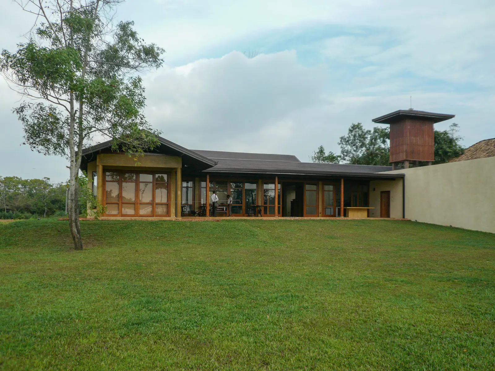
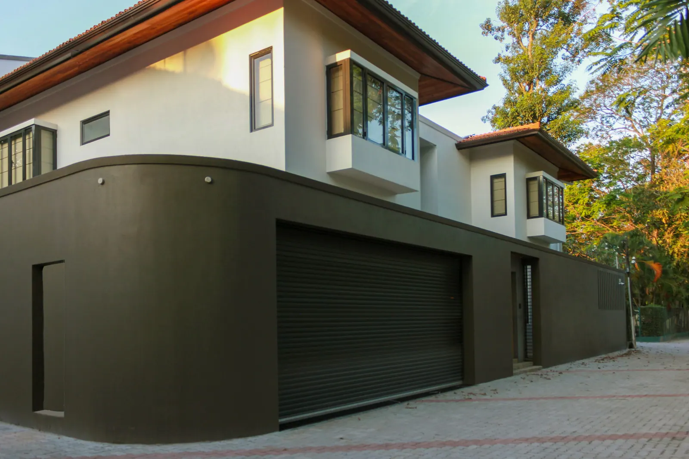
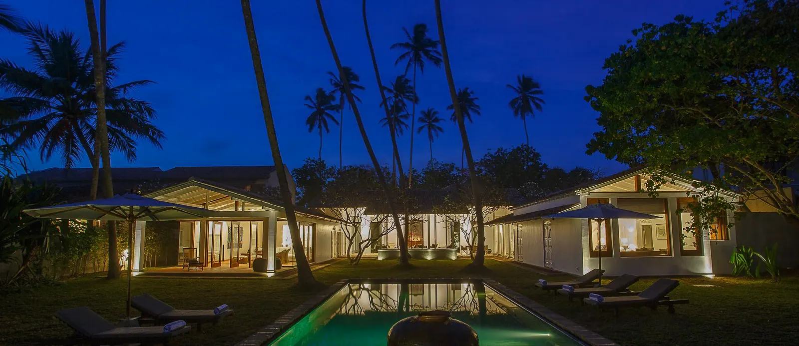

Architecture / Residential

Architecture / Residential
Residential Architecture
Design that feels like home.
Architecture / Residential
Contemporary Residence

Architecture / Residential
Tropical Living

More To Explore